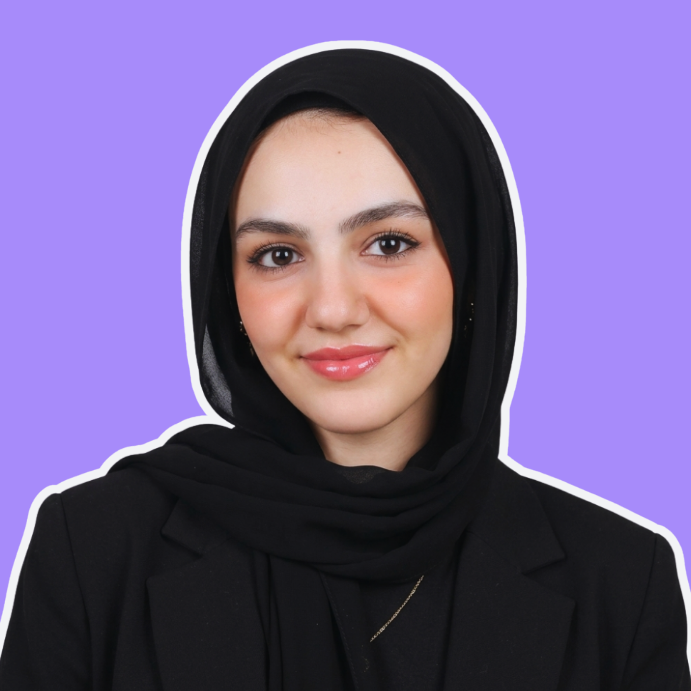

Building opportunities. Leading communities. Creating impact.
Hi, I'm Malak Emad
A student, researcher, founder, and community builder passionate about technology, leadership, and helping young people discover opportunities that can change their lives.
Success becomes more meaningful when you help others succeed too.

About
If I had to describe myself in a few words, I would say: Curious. Luminary and Community-driven.
I am a pre-college student from Egypt with a deep interest in technology, innovation, and solving real-world problems. I enjoy exploring different fields, asking questions, and turning ideas into projects.
Whether I'm organizing an event, building a website, conducting research, managing a team, or mentoring students, I always try to bring energy, creativity, and purpose into everything I do.
One thing that defines me is that I rarely give up. When I face challenges, I see them as puzzles waiting to be solved.
Quick Facts
Experience
Building Communities, Creating Opportunities, and Making Things Happen
U-Reporter & Youth Advocate
As a U-Reporter, I contribute youth perspectives to conversations around education, climate action, and social development. Through surveys, discussions, and community engagement, I help ensure that young people's voices are represented in conversations that shape the future.
Founder & Program Director
Dear Future Luminary began as an idea born from my own journey. Today, it's a growing initiative that helps students discover opportunities, develop their profiles, and navigate their academic journeys with confidence. From mentorship sessions to resource development, every part is designed to make opportunities more accessible.
Project Manager
At Kode With Klossy, I strengthened both my technical and leadership skills by managing collaborative web-development projects. Working alongside talented students from different backgrounds taught me how to communicate effectively, organize workflows, and transform ideas into functional digital experiences.
Head of Operations & Platform Manager
One of my most hands-on leadership experiences. I helped transform an educational platform from an idea into a fully operational system. My responsibilities range from platform management and student onboarding to customer support systems and team supervision.
Project Manager
Managing international research teams taught me how to coordinate diverse perspectives, organize complex projects, and maintain progress toward shared goals. Working with students from around the world strengthened both my leadership and collaboration skills.
Projects
Turning Ideas Into Impact
Dear Future Luminary
The project closest to my heart. Dear Future Luminary was created to help students access opportunities that often feel hidden or out of reach. The platform brings together scholarships, STEM clubs, competitions, summer programs, leadership opportunities, and practical resources in one place.
Mentorship Series
Through a structured mentorship initiative, I delivered sessions helping students understand application strategies, personal branding, extracurricular development, and opportunity discovery. The sessions reached dozens of live participants and hundreds of additional viewers online.
Culture Odyssey
Built during Kode With Klossy, Culture Odyssey explored cultural storytelling through web design and interactive experiences. The project combined creativity, teamwork, and technology while strengthening my front-end development skills.
Crop Growth Control System
Developed through AFS Intercultural Programs, this project focused on sustainability and smart agriculture. The system monitored temperature and soil humidity to automate irrigation processes, helping reduce unnecessary water consumption while improving agricultural efficiency.
Core Competencies
Awards
Recognition and Achievements
Youth Leadership Award
Recognized for exceptional leadership and community impact through Dear Future Luminary and mentorship initiatives.
Innovation in Education
Honored for creating innovative solutions that make educational opportunities more accessible to students globally.
Global Collaboration Excellence
Recognized for outstanding collaboration in international research projects with students from 100+ countries.
Sustainability Champion
Acknowledged for developing technology solutions that contribute to environmental sustainability and resource conservation.
Certifications
Professional Development and Credentials
Web Development Fundamentals
Comprehensive certification in HTML, CSS, JavaScript, and responsive web design principles.
Project Management Essentials
Certification in project planning, team coordination, and stakeholder management.
Sustainability and Climate Action
Certification in sustainable development, environmental conservation, and climate-related solutions.
Youth Leadership and Mentorship
Certification in mentoring, youth development, and community engagement strategies.
Leadership
Leading with Purpose and Passion
Founded an initiative that has impacted hundreds of students globally. Built systems for opportunity discovery, mentorship, and profile development. Demonstrated the ability to turn a personal challenge into a scalable solution.
Transformed an educational platform from concept to operational reality. Managed teams, optimized workflows, and ensured quality at scale. Learned that successful platforms are built on strong people and systems.
Led cross-functional teams in delivering international research projects and web development initiatives. Coordinated diverse perspectives and maintained focus on shared goals. Strengthened communication and collaboration skills.
Guided students through transformative opportunities. Advocated for youth voices in global conversations. Believe that leadership is about making sure everyone's voice is heard.
Research
Exploring Global Challenges Through Evidence-Based Problem Solving
Environmental Solutions
Interdisciplinary research projects focused on sustainability and climate-related challenges. Collaborated with students from over 100 countries to develop evidence-based solutions.
Opportunity Discovery
Research on barriers to educational opportunities and strategies to make STEM programs, scholarships, and international experiences more accessible to underrepresented students.
Smart Agriculture
Explored how IoT and automation can solve real-world problems. Developed systems for environmental monitoring and resource optimization in agricultural settings.
Youth Empowerment
Research on how to empower young people to become leaders and change-makers. Focus on mentorship, skill development, and creating pathways to meaningful opportunities.
International Networks
Participated in global research networks and international programs. Deepened understanding of how local challenges connect to global issues and the power of cross-cultural collaboration.
Artificial Intelligence
Exploring how AI can be used responsibly to solve meaningful problems. Interested in applications in education, healthcare, sustainability, and social development.
Why AI
People often ask me why I want to study Artificial Intelligence.
Because AI combines everything I love.
- Problem-solving
- Creativity
- Technology
- Innovation
- Impact
AI is no longer a technology of the future. It is already shaping healthcare, education, agriculture, sustainability, business, and almost every aspect of our daily lives.
What excites me most is not just building intelligent systems. It's using those systems to solve meaningful problems—from improving education access to supporting sustainable development and helping communities make better decisions.
I want to be part of that future.
Not only as a learner, but as a builder.
Why Alamein
When exploring universities, I wasn't only looking for a place to study. I was looking for a place to grow.
A place where I could learn, collaborate, conduct research, join communities, and challenge myself beyond the classroom.
Alamein International University stands out because it combines academic excellence with practical learning, innovation, and global exposure.
What attracts me most is the opportunity to learn in an environment that encourages students to think, create, and take initiative.
I see university as more than lectures and exams. I see it as a platform for research, leadership, entrepreneurship, community engagement, and lifelong learning.
I believe Alamein International University can help me transform my ideas into impactful projects and prepare me to contribute meaningfully to society.
This is not just a university I want to attend.
It is a community I genuinely want to be part of.
Contact
If you'd like to learn more about my work or simply connect, I'd be happy to hear from you.
malak@example.com
Phone
+20 (123) 456-7890
Location
Egypt